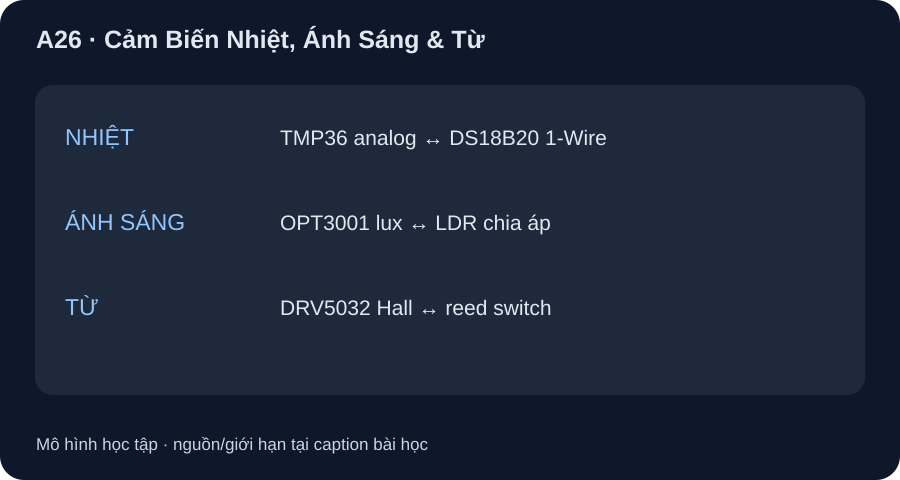

Cảm Biến Nhiệt, Ánh Sáng & Từ
So công nghệ analog, bus số và công tắc ngưỡng theo câu hỏi đo cụ thể.
- Tính nhiệt từ VOUT TMP36 và giải thích sai số ADC khác sai số sensor.
- So TMP36 với DS18B20 theo nguồn, output, dải, sai số và thời gian chuyển đổi.
- Chọn công nghệ ánh sáng/từ theo yêu cầu lux liên tục hay phát hiện ngưỡng.

Đọc hình bằng chữ
Nhánh nhiệt đặt TMP36 analog cạnh DS18B20 bus số. Nhánh ánh sáng đặt cảm biến lux OPT3001 cạnh LDR điện trở phụ thuộc ánh sáng. Nhánh từ đặt Hall switch DRV5032 cạnh reed switch cơ khí. Mỗi cặp khác nhau ở đại lượng đầu ra, giao tiếp, hiệu chuẩn và thời gian; không có wiring chung cho sáu lựa chọn.
1. Nhiệt độ: điện áp so với 1-Wire
TMP36 Rev. H cho 750 mV tại 25 °C và slope 10 mV/°C, vì vậy mô hình danh định T[°C]=(VOUT[mV]−500)/10. Nếu đọc 760 mV thì T=26 °C danh định. Đây chưa tính sai số sensor, ADC, reference, loading và nhiệt tiếp xúc. ±1 °C ở 25 °C và ±2 °C trên −40…125 °C trong phần giới thiệu là typical, không phải bảo đảm mọi mẫu/grade; đọc bảng grade F/G cho giới hạn khi chốt BOM. Thời bật điện 0,5–1 ms không phải đáp ứng nhiệt của package.
DS18B20 Rev. 6 đưa nhiệt độ qua 1-Wire, VDD 3,0–5,5 V khi cấp riêng; đo −55…125 °C, ±0,5 °C trong −10…85 °C, cấu hình 9–12 bit. Ở 12 bit, LSB 0,0625 °C nhưng phép chuyển đổi có thể tới 750 ms. Giá trị thanh ghi +85 °C sau bật nguồn có thể là giá trị khởi đầu: phát Convert T, chờ hoàn thành, đọc scratchpad và CRC trước khi dùng. Parasite power cần strong pull-up theo datasheet; bài này chọn cấp VDD riêng khi so, không giả vẽ bus.
| Tình huống | Ứng viên và lý do | Điều cần kiểm |
|---|---|---|
| Đã có ADC phù hợp, cần quan sát tín hiệu VOUT liên tục | TMP36 | Reference/LSB/độ tuyến tính ADC, package/thermal coupling |
| Cần nhiều điểm nhiệt trên một bus với ID | DS18B20 | 1-Wire timing/pull-up/CRC, thời chuyển đổi, chân pinout đúng package |
| Yêu cầu chu kỳ cập nhật dưới 500 ms ở 12 bit | Không chốt DS18B20 12-bit chỉ từ số 750 ms max | Xét độ phân giải khác hoặc part khác; kiểm cả đáp ứng nhiệt thực |
2. Ánh sáng: lux so với điện trở phụ thuộc sáng
OPT3001 Rev. C là cảm biến ánh sáng môi trường đưa mã lux qua I²C, VDD 1,6–3,6 V. Full-scale lớn nhất 83.865,6 lux; 0,01 lux/LSB chỉ khi đặt range thấp nhất, trong khi range cao có LSB lớn hơn. Chế độ tích phân 100/800 ms đánh đổi tốc độ và độ phân giải hiệu dụng; auto-range có thể cần phép đánh giá lại. Không coi chỉ số 0,01 lux là sai số phép đo qua kính che hoặc dưới mọi phổ/góc.
LDR là điện trở thay đổi theo chiếu sáng, có thể tạo cầu chia áp và ADC như A02/D27; nếu cần mức lux có truy xuất, phải chọn mã LDR, đường R–lux, phổ, nhiệt và hiệu chuẩn riêng. Chưa chọn part LDR nên không gán dải/sai số/thời gian cho nó. Nếu chỉ cần ngưỡng sáng/tối, LDR + comparator có thể là ứng viên; nếu cần lux số và điều kiện quang học được công bố, OPT3001 có đường datasheet rõ hơn.
3. Từ trường: phát hiện ngưỡng so với tiếp điểm
DRV5032 Rev. H là Hall switch lấy mẫu, VCC 1,65–5,5 V. BOP/BRP, cực từ, nhịp 5/20/80 Hz và kiểu push-pull/open-drain tùy suffix. Nó phát mức số khi vượt ngưỡng, không đo biên độ mT liên tục. Reed switch là tiếp điểm cơ khí đóng/mở bởi nam châm; có thể phù hợp bài chỉ cần phát hiện tiếp cận nhưng cần kiểm bounce, tuổi thọ, hướng/độ mạnh nam châm theo part. Không có mã reed đã chọn nên không khẳng định tốc độ hay tuổi thọ số. Với Hall open-drain cần nguồn kéo lên tương thích input MCU; với push-pull không thể mặc nhiên kéo lên 5 V rồi nối vào GPIO 3,3 V.
Viết ba yêu cầu: (1) nhiệt 20–40 °C, cập nhật ≤1 s; (2) báo “sáng/tối” hay lux tuyệt đối; (3) phát hiện nam châm đứng yên. Với mỗi yêu cầu chọn công nghệ, xác định output/nguồn/dải và chỉ ra phép thử/chứng cứ còn thiếu. Không đổi chữ “độ phân giải” thành “accuracy”.
TMP36 xuất 0,760 V: tính nhiệt danh định. DS18B20 12 bit có LSB 0,0625 °C và conversion tối đa 750 ms: hai số này chứng minh sai số ±0,0625 °C và chu kỳ dữ liệu mới 100 ms không? Chọn thiết bị cho phép đo lux số, nêu một yếu tố làm sai kết quả; Hall DRV5032 có đo biên độ mT liên tục không?
- 1 điểm: (760−500)/10=26 °C danh định.
- 1 điểm: LSB 0,0625 °C chỉ là bước mã, không là accuracy; DS18B20 có giới hạn accuracy riêng ±0,5 °C trong −10…85 °C.
- 1 điểm: 750 ms max ở 12 bit không chứng minh cập nhật dữ liệu mới mỗi 100 ms; còn bus và nhiệt.
- 1 điểm: OPT3001 cho lux số, nhưng phổ/góc/kính che ảnh hưởng; DRV5032 là switch ngưỡng, không đo B liên tục.